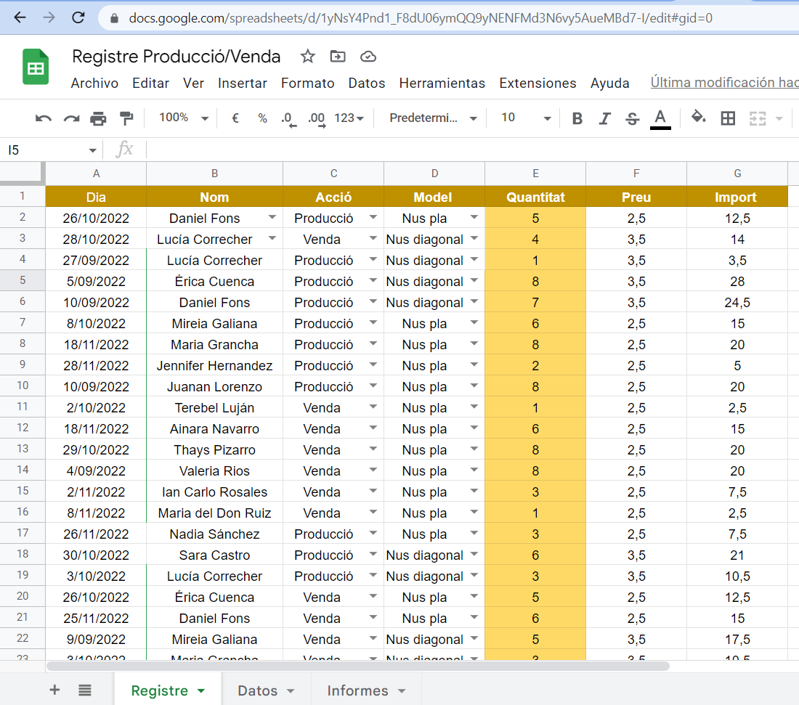

Curs 2022-2023
Professorat de nova incorporació
Fernando Verdú Primo
Professor Cicles Formatius
Gestió Administrativa i Activitats Comercials
Procés Ensenyança-Aprenentatge
Procés Ensenyança-Aprenentatge
"L'ensenyança és el cultiu de les ments joves, com un bon jardiner, que cuida les seves plantes i les ajuda a créixer, el professor ha de dedicar temps i atenció perquè els seus alumnes arriben al seu màxim potencial."
Federico Mayor Zaragoza, filòsof espanyol

Projecte Aprenentatge-Servei
Polseres Solidàries
Per qué el Projecte-ApS Polseres Solidàries?
Suposa una oportunitat única per aplicar els coneixements i habilitats per a ajudar a gent necessitada
L'alumnat s'involucra en la comunitat cristiana
Fomenta un aprenentatge més rellevant i significatiu
Output generat
Dossier informatiu
Compromís d'establiment
Activitats necessàries
Pla de marketing
Registre i generació de dades de gestió
Evidències observades
- Els estudiants han assumit un paper actiu en el projecte: han pres decisions i han desenvolupat habilitats de lideratge
- Els ha permés sentir-se empoderats i responsables del seu propi aprenentatge.
- L'alumnat ha realitzat activitats per voluntat pròpia ; s'han organitzat de manera espontània
- El projecte tenia com a objectiu donar suport a una causa solidària, el que va permetre als estudiants sentir que estaven fent una contribució significativa a la comunitat cristiana
- El projecte es va avaluar continuament i es va fomentar la reflexió sobre el procés i els resultats , el que ha permés millorar el projecte i augmentar el seu impacte
Lectura per a recomanar

Lectura per a recomanar
El llibre "L'Home en Busca de Sentit" de Viktor Frankl pot ser útil per als estudiants de 16 anys en amunt en diversos aspectes:
- Trobar el seu propòsit a la vida: Els estudiants poden estar començant a pensar en el seu futur i en quina carrera o treball volen seguir. El llibre pot ajudar-los a reflexionar sobre les seves pròpies metes i aspiracions, i a trobar un propòsit més profund a la seva vida.
- Comprendre la importància de la llibertat: els estudiants estan començant a prendre més decisions per ells mateixos i a assumir més responsabilitats. El llibre pot ajudar-los a comprendre la importància de la llibertat i la capacitat de triar les seves respostes davant situacions difícils.
Lectura per a recomanar
- Aprendre sobre la resiliència humana: El llibre explora com els éssers humans poden superar situacions difícils i trobar la força per seguir endavant. Els estudiants poden aprendre sobre la resiliència humana i com poden aplicar aquestes lliçons a les seves pròpies vides.
- Desenvolupar habilitats de pensament crític: El llibre de Frankl és un llibre desafiador que convida els lectors a reflexionar i pensar de manera crítica. Els estudiants poden desenvolupar habilitats de pensament crític i aprendre a qüestionar i analitzar idees importants.